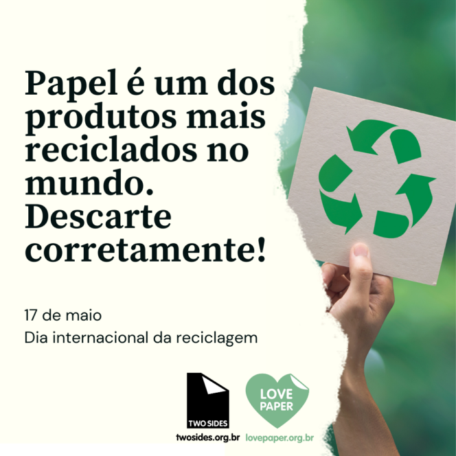

A reciclagem de papel é um processo essencial para a sustentabilidade, que reaproveita as fibras celulósicas do papel usado para produzir novos produtos. O processo inclui a coleta, separação e trituração do papel, seguida da desagregação das fibras em uma polpa, depuração para remover impurezas, refino e produção de novas folhas na máquina de papel. Este ciclo economiza recursos naturais como água e energia, reduz o volume de lixo em aterros e protege as florestas, embora as fibras se desgastem a cada reciclagem, limitando o número de vezes que o papel pode ser reciclado. O que é a reciclagem de papel É a transformação de resíduos de papel (como jornais, revistas, caixas de papelão e embalagens) em novos produtos de papel. É fundamental para a conservação de recursos naturais e energia, pois diminui a demanda por matéria-prima virgem, como a madeira. Ajuda a reduzir a quantidade de resíduos sólidos que iriam para aterros sanitários, impactando menos o meio ambiente.
A reciclagem de papel ajuda a reduzir o desmatamento e economiza energia e água.
Exemplos: jornais, revistas, folhas e caixas de papelão.
⬅ Voltar